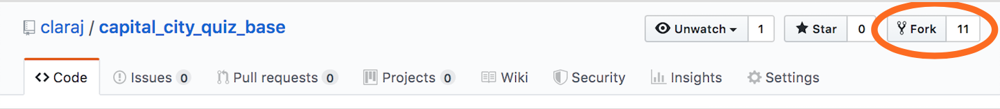

Part 1: ISS Location (5 points)
Make sure your ISS map site is working, and updating every 10 seconds.
Reminder: for all of the lab questions, you must follow the instructions in the slides and write the code yourself. Remember there are evil bytes in the example code and if you simply submit copies of the example code, it will be detected and you'll get a zero grade. The example code is provided for your reference as you work on the class projects.
Part 3: Capital City Guessing Game (15 points)
Fork this repository to make a copy of it in your own GitHub repository.
https://github.com/claraj/capital_city_quiz_base
To fork, go to the repository page in your browse, and click on the Fork button, top right of the repository.

This will create a copy of the code in your own GitHub account. Clone your copy of the repository to your computer.
Look for the TODO messages in index.js and game.html to finish the guessing game.
The user will be shown a country, selected at random. They will guess that country's capital city. Your page will show a message telling them if they are right or wrong.
You will add a "Play again" button. When the user clicks this button, they will be shown a new country, and will guess the capital city, as before.
You'll use the World Bank API. Here's an example of how to use the API - if you need data about Brazil including the capital city, then use this URL: https://api.worldbank.org/v2/country/br?format=json
Make sure you handle errors in case the call to the API fails, or the response isn't in the form you expect.
Optional: if you want to use the close match algorithm to allow close guesses, the link to the close string algorithm script is https://unpkg.com/fast-levenshtein@2.0.6/levenshtein.js
Push your work back to your GitHub repository. You do not need to create a new git repository for this work - you already have one. When you push your work, it will be pushed to your fork. As always, if you have any questions, please ask or email.
Enable GitHub pages for this repository and make sure your page works in the browser at GitHub. Instructions for GitHub Pages
To submit